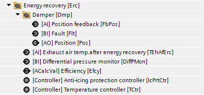
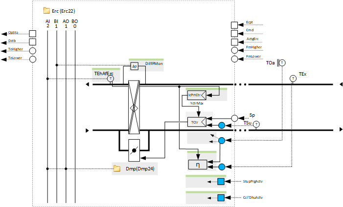
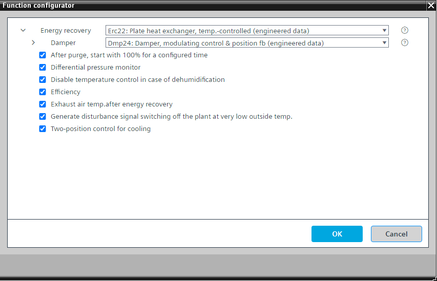

[Erc22] 能量回收，板式换热器，温控
Program block, name / node subtype: [Erc22] Energy recovery, plate heat exchanger, temperature-controlled
Library hierarchy: Ventilation and air conditioning equipment
Family: Erc
项目树 | 图表 |
|---|---|
|
 |  |
Configurator


程序块存储在没有 I/Os. 的库中 使用auto-create and auto-connect函数创建 I/Os 和 /or 将它们连接到接口块，例如 R_A、CMD_B。或者，从包含库中预定义 I/Os 的文件夹中取出 I/Os，并从工厂中取出 /or，并将它们连接到接口块。
通过改变风门的位置来控制送风温度（加热和冷却），风门控制着外部空气的一部分绕过板式热交换器。
温度控制器根据另一个程序块的条件动态地改变其加热或冷却的控制动作。
该程序块具有以下可选功能：
Option: After purge, start with 100 % for a configured time
提供“启动净化”功能和逻辑状态的接口，以在“启动净化”功能完成后将能量恢复保持在 100 % 可配置的时间（例如 4 分钟）。
Option: Differential pressure monitor (1xBI)
读取能量回收过程中压差监测器的信号。如果由于能量回收骨料表面结冰而导致压差增大，则会降低用于防冰保护的温度控制器的输出。
Option: Disable temperature control in case of dehumidification
提供一个接口（最有可能是冷却盘管）和逻辑，以在除湿时禁用温度控制，以便在冷却盘管执行除湿时不预热空气。
如果将能量回收设置为冷却，则其以 100% 运行。
Option: Efficiency
计算能量回收的效率。程序中使用了功能块 MON_ERC。
此效率计算需要选项“能量回收后的排气温度”。
Option: Exhaust temperature after energy recovery (1xAI)
读取能量回收后排气温度传感器的信号。使用 PID 控制器执行防冰保护，限制温度控制器的输出。
Option: Generate disturbance signal switching off the plant at very low outside temperature
如果在室外温度很低的情况下能量回收出现问题，加热功率可能会不足，导致送风温度可能会下降到高于防冻保护的水平，但仍然很不舒服。这就是产生关闭空气处理机组的干扰信号的原因。
Option: Two-position control for cooling
冷却时温度控制器的2位控制方式。
姓名 | 描述 | 类型 | 报警/通知类 | 趋势/类型 |
|---|---|---|---|---|
Dmp | Damper | N/A | N/A | |
TCtr | Temperature controller | Ctr: Controller | N/A | N/A |
姓名 | 描述 | 类型 | 报警/通知类 | 趋势/类型 |
|---|---|---|---|---|
TEhAfErc | Exhaust air temperature after energy recovery | AI：模拟输入 | No | 是的，2 |
属于该元素的其他元素： IcPrtCtr | Anti-icing protection controller | Ctr: Controller | ||||
DiffPMon | Differential pressure monitor | BI：二进制输入 | 是的，8 | No |
Efcy | Efficiency | ACalcVal: Analog calculated value | No | No |
描述 |
|---|
|
2 位冷却控制 |
清除后，以 100 % 开始一段配置的时间。 |
产生干扰信号，在室外温度极低的情况下关闭设备。 |
Disable temperature control in case of dehumidification |